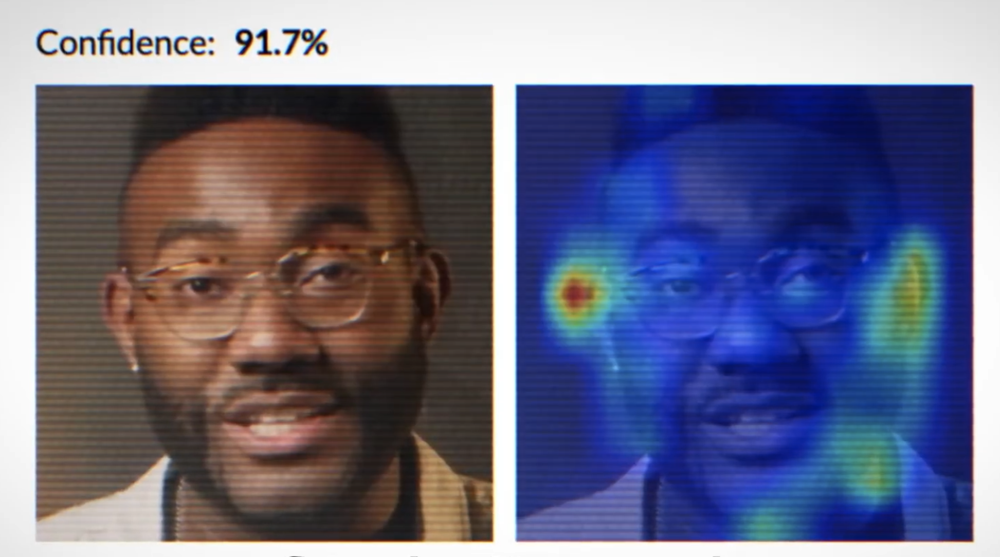
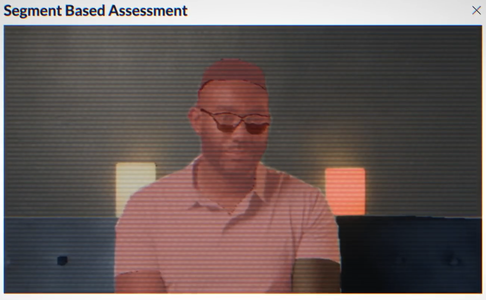

SENSITY.AI
Análisis Forense Multimedia mediante Sensity AI
Detección Multicapa de
Amenazas Sintéticas
Asignatura: Auditoría y Seguridad en Sistemas de Información
Raúl Gómez Téllez
Máster en Ingeniería Informática | UJA
01 / 13
Índice General
Agenda de la presentación (Auditoría Forense)
1
El Contexto de la Amenaza
Fraude sintético y deepfakes generativos. (Slide 3)
2
Sensity AI como Plataforma
Visual Threat Intelligence de grado pericial. (Slide 4)
3
Arquitectura de Integración
Sesiones JWT y pipeline asíncrono. (Slide 5)
4
Endpoints y Pipeline Analítico
Detección modular de audio, cara e imagen. (Slide 6)
5
Análisis de Píxeles
Inconsistencias biométricas y heatmaps. (Slide 7)
6
Auditoría Acústica y Estructural
Clonación de voz y metadatos corruptos. (Slide 8)
7
Aplicación en Entornos KYC
Anti-spoofing y vitalidad en onboarding. (Slide 9)
8
Caso Práctico: Incidente
Suplantación e intercepción forense. (Slide 10)
9
Ejecución del Análisis
Llamadas a API REST y respuestas webhook. (Slide 11)
10
Resultados e Informe Pericial
Rigor explicativo y validez judicial. (Slide 12)
11
Conclusiones y Turno de Preguntas
Certeza matemática y Q&A del tribunal. (Slide 13)
02 / 13
El Contexto de la Amenaza
El auge del fraude sintético
-
Evolución del cibercrimen: Transición directa de la manipulación
tradicional de
metadatos a la Inteligencia Artificial Generativa avanzada (Deepfakes de alta fidelidad,
clonación fidedigna de voz).
-
Ineficacia defensiva: Inutilidad de los analizadores hash o heurísticos
tradicionales frente a sofisticadas arquitecturas GAN y modelos de difusión estable.
FRAUDE DE IDENTIDAD
+145%
Crecimiento
del
fraude del CEO y suplantaciones sintéticas
03 / 13
Sensity AI como Plataforma
Visual Threat Intelligence de nivel pericial
-
Definición Forense: Plataforma de Inteligencia de Amenazas Visuales
específicamente
orientada a proporcionar evidencias de grado pericial reproducibles ante tribunales.
-
Enfoque Integral: Auditoría unificada y correlacionada de imagen estática,
vídeo
dinámico y pistas de audio para desmontar engaños estructurados.
API de alta disponibilidad y actualizaciones
continuas de detección.
Aislamiento local completo de evidencias,
vital
para soberanía y normativas gubernamentales.
04 / 13
Arquitectura de Integración
Pipeline asíncrono y control de acceso REST
-
Sesiones JWT: Control de accesos estricto mediante tokens JWT generados en
el
endpoint `/auth/tokens`.
-
Modelo Asíncrono: Orientación a eventos vía Webhooks (`POST
/webhooks/{event}`) eliminando el costoso polling.
-
Límites: Soporte para ingestas masivas de hasta 68 MB,
2560p,
vídeos de 30 min y audios de 20 min.
// Ciclo de Vida del Análisis
[Cliente] -- POST /tasks (JWT) -->
[Sensity]
[Cliente] <-- 202 Accepted (Task ID) --
[Sensity]
>> Pipeline en ejecución asíncrona...
[Cliente] <-- POST Webhook (Resultados) --
[Sensity]
05 / 13
Endpoints y Pipeline Analítico
Servicios modulares de auditoría
POST /tasks/face_manipulation
Evalúa manipulaciones locales (Face Swap, Reenactment) devolviendo matrices de probabilidad
facial.
POST /tasks/image_generation
Servicio especializado en la detección de síntesis total desde cero generada por modelos de
difusión
estable.
POST /tasks/voice_analysis
Escrutinio matemático profundo del espectro acústico en busca de clonación vocal por
inteligencia
artificial.
POST /tasks/forensic_analysis
Análisis profundo de la estructura interna del contenedor del archivo multimedia y consistencia
de
cabeceras.
06 / 13
Análisis de Píxeles e Inconsistencias
Inconsistencias Biométricas y Mapas de Calor
Examen de
micro-dinámicas
humanas:
-
Fallos Biométricos: Rastreo de parpadeos anómalos, reflejos corneales
asimétricos y rigidez pupilar.
-
Mapas de Calor (Heatmaps): Sensity ilumina los bordes del rostro y zonas de
interpolación inusual.
-
Ruido de Alta Frecuencia: Identificación del ruido generado por la
interpolación de píxeles al mezclar frames.

Heatmap forense:
Iluminación
de inconsistencias en el contorno facial
07 / 13
Auditoría Acústica y Estructural
Modelado acústico y Red Flags en JSON
Escrutinio de audio y
metadatos:
-
Métricas de Voz: Evaluación algorítmica de variables críticas como
jitter, shimmer y consistencia de pitch.
-
Software de Edición: Clasificación de herramientas en
benign,
suspect o critical.
-
Alertas de Integridad: Levantamiento inmediato de banderas automáticas como
METADATA_ERROR o FILE_EDITED.
{
"audio_features": {
"jitter": 0.024,
"shimmer": 0.18,
"pitch_consistency": 0.89,
"synthesized_prob": 0.96
},
"red_flags": [
"METADATA_ERROR",
"FILE_EDITED"
],
"claim_lists": "suspect"
}
08 / 13
Aplicación en Entornos KYC
Protección activa de identidad en onboarding
-
Anti-Spoofing: Bloqueo absoluto de ataques de presentación que intentan
inyectar fotos estáticas, máscaras en 3D o streams de video sintéticos.
-
Protección del Liveness: Evita la evasión de pruebas de vitalidad pasivas y
activas auditando los flujos entrantes de la webcam.
-
Integración Backend: Evaluación automatizada de selfies y documentos de
identidad antes de conceder accesos lógicos y firmas de contratos.

Mapeo geométrico facial y
control de puntos de vitalidad
09 / 13
Caso Práctico: Planteamiento
Intento de suplantación en apertura de cuenta
1
El Incidente: Un atacante intenta suplantar una identidad corporativa abriendo una
cuenta bancaria digital usando un pasaporte sintético y un selfie-video deepfake
inyectado.
2
Recolección Forense: Intercepción del video de vitalidad sospechoso y volcado
íntegro
de la sesión HTTP en crudo para preservar los metadatos y la estructura original del contenedor.
3
Cadena de Custodia: Almacenamiento seguro en almacenamiento forense no modificable,
calculando hashes SHA-256 atómicos de las evidencias antes de su envío al pipeline analítico.
10 / 13
Ejecución del Análisis
Orquestación de la API de Sensity
1
Invocación REST: El servidor de la entidad realiza una petición
POST /tasks/face_manipulation enviando el video de vitalidad intermitente e
introduciendo
las credenciales JWT.
2
Procesamiento de Tensores: El backend de la aplicación aguarda de forma pasiva sin
bloquear hilos de ejecución de la pasarela bancaria.
3
Recepción por Webhook: Se recibe el payload JSON de resultados bajo la firma
pre-suscrita face_manipulation_analysis_complete conteniendo el veredicto final.
11 / 13
Resultados y Reporte Pericial
Explicabilidad y Evidencia Judicial
HASH DE CADENA (SHA-256): 7f8d9b1c2d3e4f5a...
DETECCIÓN DE MANIPULACIÓN: POSITIVO (99.4%)
EXPLANATION: "Alteración geométrica y temporal detectada de manera consistente por
la
métrica de spectral_artifacts en el área labial (desfase temporal de fase de audio y
sincronía de píxeles)."
* Rigor explicativo: La plataforma expone con precisión la anomalía matemática (ej:
spectral_artifacts) que justifica el veredicto de sospecha, vital para litigios judiciales.
12 / 13
Conclusiones Finales
Certeza matemática y Q&A
Rigor
Científico
Transformación directa de tensores y vectores matemáticos complejos en informes periciales
auditables,
objetivos y de alta fiabilidad.
Escalabilidad
Defensiva
API de alto rendimiento que permite la auditoría asíncrona de flujos de verificación masivos sin
sobrecargar los sistemas transaccionales.
¿PREGUNTAS?
Apertura al tribunal de evaluación de Auditoría y Seguridad en SI
13 / 13